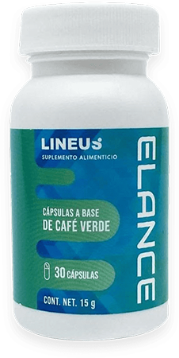

- 712
- 8
Ganaste mucho peso, pero no puedes perderlo. Tienes hambre constantemente, las dietas no te ayudan en absoluto, tus músculos crecen con el deporte, pero la grasa no desaparece... Quizá tengas un síndrome metabólico: una disminución de la sensibilidad a la insulina. Qué es este síndrome, cómo deshacerse de él y volver al peso normal, te lo explicará nuestra experta nutricionista Patricia Martínez.
En pocas palabras, el síndrome metabólico es un estado en el que se engorda y que no se puede detener. Y científicamente, con este síndrome, tu cuerpo pierde la sensibilidad a la insulina, que es la principal hormona responsable del metabolismo de las grasas (lípidos). La insulina se produce en grandes cantidades y el cuerpo es incapaz de quemar la grasa acumulada.
Las dietas, los medicamentos y la actividad física ralentizan este proceso sólo temporalmente. Si te relajas un poco o comes un postre de más, tu peso crece aún más rápido.
Según los datos más recientes, uno de cada cuatro hombres y una de cada tres mujeres con un peso extra de más de 10 kilos padecen de síndrome metabólico.
¿Por qué aparece?
Estamos acostumbrados a culpar a la mala alimentación y al estilo de vida sedentario de nuestro exceso de peso. Pero el síndrome metabólico tiene otras causas. Son las inflamaciones y los resfriados, si no descansas o no te tratas adecuadamente, los trastornos genéticos, el estrés, etc. Por tanto, nadie es inmune al síndrome metabólico. Incluso chicas jóvenes que "comen lo que quieren y no engordan".
Puedes reconocer la presencia del síndrome metabólico por estos signos:
A menudo tienes hambre
Necesitas una sartén de alimentos grasos y ricos en calorías para sentirte bien.
No puedes vivir un día sin dulces
Tu cintura mide más de 76 centímetros
La grasa se deposita principalmente en el abdomen
Tienes la piel seca, especialmente en las manos, el cuello, las rodillas y los codos
Te cuesta conciliar el sueño por la noche y quieres dormir todo el tiempo durante el día
¡Las dietas son inútiles contra el síndrome metabólico!
Se trata de la tolerancia a la glucosa en medio de un exceso de insulina. Comas lo que comas, tu cuerpo lo percibe como un alimento sin carbohidratos. Aunque acabes de tragarte una pizza entera, tu cuerpo piensa que es una manzana o una hoja de lechuga, y no está saturado. Tu cerebro pide más y más comida y no puede calmarse.
Imagínate, ¿cómo te sentirás con una dieta? Es poco probable que dures más tiempo y que no te descompongas...
La gente solía tratar el síndrome metabólico con inhibidores hormonales de la insulina.
Con estos medicamentos, el paciente pierde peso gradualmente, pero provoca daños al hígado y a la glándula tiroides, ¡que ni siquiera el alcohol puede dar!
Algunos medicamentos están cargados de diabetes, hepatosis y cirrosis hepática. Es decir, que habiendo curado una llaga, el paciente adquiere otra, que es aún peor.
¿Existe una solución segura?
Hace sólo un par de años, los científicos descubrieron inhibidores de la insulina en las hojas de té verde y en los granos de café verde.
Cuando estos 2 componentes interactúan, el nivel de insulina disminuye, junto con el apetito. Y cuando no quieres comer y tu metabolismo está bien, la grasa de la cintura y las caderas desaparece ante tus ojos. ¡Y todo ello sin perjudicar tu salud!
Este desarrollo se lanzó inmediatamente al mercado masivo. En el mercado, este producto se conoce con la marca . Es un producto natural y seguro para perder peso, que quema rápido y eficazmente las células grasas y ayuda a eliminar el síndrome metabólico.
Así es como funcionan sus ingredientes:
Las hojas de té verde en reaccionan con la insulina y descomponen el exceso de la misma.
Los granos de café verde reducen la tolerancia a la glucosa, por lo que tu cuerpo se saciará más rápido con pequeñas porciones.
La celulosa microcristalina descompone intensamente los depósitos de grasa de la cintura y las caderas.
Y el magnesio mejora tu metabolismo, previene el depósito de grasa y evita que tu cuerpo vuelva a ganar peso.
En 2-3 semanas de consumo diario de tu nivel de insulina se normaliza, tu metabolismo se restablece y el síndrome metabólico desaparece. En un mes, tu peso se estabiliza y desaparecen otros síntomas desagradables: trastornos del sueño, fatiga, falta de aire, etc.
Tan pronto como llegó a las tiendas, mis clientes con síndrome metabólico vieron inmediatamente la diferencia.
José, 27 años
Tomé demasiados neurolépticos, mi insulina subió tanto que gané 40 kilos en un año. Empecé a ir al gimnasio todos los días, sin resultados, mi barriga crecía como la espuma. Tenía hambre constantemente, estuve a punto de comer unas hamburguesas por la noche.
Me di cuenta de que esto tenía que parar: fui a un nutricionista. Me aconsejó que utilizara este producto.
Debes tomar 1 cápsula de 500 mg con un vaso de agua (8,45 fl oz) antes de cada comida o según te recomiende un especialista, que puede aumentar o disminuir la dosis en función de tus indicadores corporales. Llevo 3 meses tomándolo y he perdido 30 kilos. Seguiré tomando este producto hasta llegar a 75 kilos.
Ofelia, 55 años
Mi clímax ha desaparecido, pero los problemas no terminaron. Empecé a ganar grasa en la cintura y los hombros.
Intentaba activamente perder peso, pero sólo me ayudó. En un mes, perdí 20 kilos y mi cintura se redujo 15 cm.
El nutricionista me dijo que tenía que esperar 2 semanas y retomar el tratamiento de nuevo. Y entonces volvería a pesar 61-63 kilos.
Luisa, 64 años
Con mis enfermedades (hipertensión, problemas de metabolismo, picos de insulina), empecé a ganar peso. En enero, pesaba 106 kilos, y mi estatura es de 1,70 m.
Ahora pierdo peso con . Es compatible con mis medicamentos. Y lo más importante, da resultados. ¡Estoy más delgada que cuando era joven! ¡Conseguí perder 35 kilos!
Y lo más importante: cuesta lo mismo que una comida de negocios normal. Las hojas de té verde y los granos de café verde son ingredientes asequibles.
Pero sólo se vende por Internet. Sólo puedes comprarlo en el sitio web del fabricante.
Por cierto, tengo un regalo para mis suscriptores: 50% de descuento para en este sitio web. Si llevas mucho tiempo intentando perder peso y sospechas que tienes un síndrome metabólico, ahora tienes la oportunidad de poner en orden tu cuerpo y tu salud.
¡Apúrate!
Diana
¡Esa es la razón! Pensaba que era por el chocolate de la noche...
Silvia García
Empecé a ganar peso después de los 50 años. Limito la comida, hago ejercicio, siempre me cuidé, y ahora gané 9 kilos, nada ayuda. así que usaré tu regalo, ¡gracias!
Emilia
Es muy triste cuando comes 700-800 kcal al día, pero sigues ganando 2,5 kg en una semana. Creo que tengo problemas con mi insulina...
Raúl
es genial. ¡Es perfecto si engordas por un desequilibrio hormonal! Yo perdí 16 kilos con él, y llevo un año manteniendo este peso.
Hilda
Mi madre se lo bebió. Perdió 10 kilos y ahora se siente muy bien. Sus otros síntomas desaparecieron: tiene menos hambre y duerme mejor.
Cristina
Aumenté 15 kilos durante el verano, aunque mi dieta y mi estilo de vida siguieron siendo los mismos. Pero lo peor es que contraje enfermedades que antes desconocía: mi presión empezó a subir, tengo mucha hambre por la noche. Soy una persona de voluntad fuerte, pero todavía no puedo controlarme. Y apareció muy rápidamente, no esperaba que fuera tan rápido.
Paulina
Tienes un patrón clínico de síndrome metabólico. Si no haces nada con él, puedes desarrollar diabetes, hipertensión y pancreatitis.
Josefa
¡Tengo mi ! Realmente había un descuento, ¡gracias! ¡Mañana empezaré a perder peso! ¡Únete a mí si quieres!
Ariana
¡Estoy contigo! ¡Yo también recibí mi paquete hoy!
Elena
¡No te metas con las hormonas! Yo misma lo comprobé: Tuve este síndrome después de dejar de tomar las píldoras anticonceptivas. Gracias por el descuento, hice un pedido. ¡Me salió muy barato!